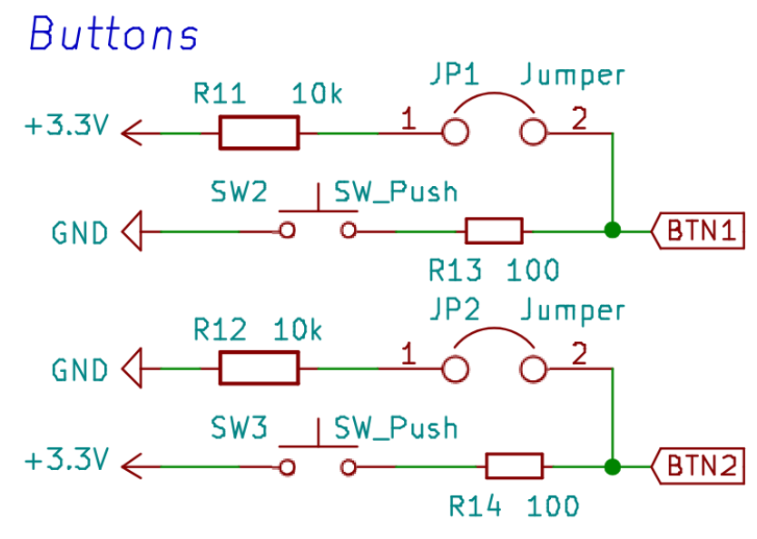

Les bases
Led
On va commencer par le “hello world” de la programmation embarquée : faire clignoter une led !
Regardez le schéma de la carte tuto : on va faire clignoter la LED2 (qui est dans le cadre “Basics” ), qui est connectée à la broche PC8 du microcontrôleur ( le bloc au centre ).
Configuration
La broche doit d’abord être configurée en sortie. Cela permettra ensuite de la mettre à l’état logique haut ou bas, ce qui se traduira par une tension entre GND et la broche de 3.3V ou 0V.
La fonction pour configurer une broche en entrée ou sortie s’appelle pinMode: void pinMode(int pin, int mode);
Elle prend en premier argument la broche à configurer, en en deuxième argument le mode. Les deux modes principaux sont INPUT et OUTPUT. Il en existe d'autres que nous verront plus tard.
On va donc configurer la broche comme ceci, dans la fonction setup:
void setup() {
pinMode(PC8, OUTPUT);
}
Commander l’état
On va ensuite changer l’état de la broche grâce à la fonction digitalWrite: void digitalWrite(int pin, int val);
Elle prend en premier argument la broche, et en deuxième l’état à écrire : HIGH ou LOW.
On va aussi utiliser la fonction delay qui met le programme en pause durant un certain temps (en millisecondes).
On écrira donc dans la fonction loop:
void loop() {
digitalWrite(PC8, HIGH); // set PC8 to HIGH
delay(500); // wait 0.5 seconds
digitalWrite(PC8, LOW); // set PC8 to LOW
delay(500); // wait 0.5 seconds.
}
Compiler (Build), puis flasher (Upload) le microcontrôleur grâce à ces deux boutons (en bas de l'application):
Un terminal devrait s'ouvrir, il faut attendre. La première fois cela peut être plus long car VS code peut vouloir installer des outils suplémentaire. Vous devriez voir le message suivant :
==== [SUCCESS] Took 14.34 seconds ====
La LED2 doit donc maintenant clignoter.
Note : Il est possible que vous aillez une erreur de televersement à ce moment, surtout si c'est la première fois. Consulter la section VS Code & Platformio peut vous aider.
Changez le programme pour la faire clignoter plus vite, ou de manière asymétrique: des flash bref séparés par un temps assez long.
Améliorer son code
On se réfère toujours à la broche par son nom: PC8. Ce n’est pas très explicite. On va donc faire ce qui s'appelle un define.
Ajoutez cette ligne au dessus de la fonction setup : #define LED2 PC8
C’est une directive de préprocesseur, qui sera appliquée avant la compilation et qui va remplacer toutes les occurrences de LED2 trouvées dans le code par PC8.
Cela nous permet donc d’écrire un code plus explicite. Vous pouvez donc écrire LED2 à la place de PC8 dans tous les appels de fonctions.
Vous pourrez remarquer au passage que HIGH et LOW ne sont que des define pour 1 et 0.
Note: En C, une expression booléenne est vraie tant qu’elle est différente de 0. Vous pouvez remplacer HIGH et LOW par un entier dans la fonction
digitalWrite, ça marchera toujours.
Une autre led
Tout en gardant votre code, faites clignoter la LED1 (PB1) au même rythme. Qu'observez-vous ? La LED1 est dans l’état opposé à la LED2. Observez le schéma électronique pour comprendre pourquoi.
Faites les clignoter de la même manière.

Note: On peut régulièrement trouver les deux manières de brancher une led. La LED2 est branchée d’une manière plus “logique”, mais il est parfois conseillé de brancher les leds comme la LED1. Les circuits intégrés reçoivent (sink) plus facilement du courant qu’ils n’en fournissent (source).
Boutons
On a appris à configurer une broche en sortie pour écrire son état, on va maintenant faire l’inverse: lire l’état d’une broche.
Note: Avant de commencer, assurez-vous que les jumpers JP1 et JP2 sont montés. On verra plus tard à quoi ils servent.

On peut brancher facilement les jumpers avec des petits connecteur. À gauche le jumper JP2 déconnecté à droite le jumper JP1 connecté.
La suite est très similaire à ce que l’on vient de faire : il faut maintenant configurer la pin en entrée (dans la fonction setup): pinMode(BTN2, INPUT);.
Puis on va lire l’état de la broche grâce à la fonction digitalRead:
int digitalRead(int pin);
Elle prend en argument la pin à lire, et retourne l’état de cette pin.
On va donc écrire ce code dans la fonction loop pour récupérer l’état du bouton, et allumer une led en conséquence :
int etat = digitalRead(BTN2);
digitalWrite(LED2, etat);
delay(10);
Compilez, flashez, testez.
Changez le temps du delay pour 1000. Que se passe t’il ? La led met longtemps à réagir car le programme est en pause, et ne fait un tour de boucle que toutes les secondes !
À savoir : La fonction
delayest ce qu'on appelle une fonction "bloquante". Lorsqu'elle est exécuté aucune autre instruction ne sera exécutée. Çela peut être un problème et dans ce cas on cherchera à utiliser des fonctions "non bloquante". Dans le cas présent ce n'est pas très important. On vera cela ultérieurement.
Remettez un delay raisonnable (moins de 100ms pour que ce soit réactif), et utilisez maintenant BTN1. Que se passe t’il ? Pourquoi ?
Note: Dans les schémas suivants, les petites résistances sont des résistances de protection que vous pouvez ignorer. Ignorez donc R13 et R14.
Intérêt des pullup et pulldown
Enlevez les jumpers. Est-ce que ça marche toujours aussi bien ? (non).
Explication : Les résistances R11 et R12 sont ce qu’on appelle des résistances de pullup et de pulldown.
Sans les jumpers, quand le bouton ne fait pas contact, la pin est “en l’air” : elle n’est connectée ni à la masse, ni au 3.3V.
Une broche en entrée est dans un état dit “haute impédance” : le courant d'entrée est très faible (idéalement 0), comme si la broche n’était pas reliée au reste du circuit.
Le potentiel (tension par rapport à la masse) de cette pin est donc indéfini, et va varier au gré des perturbations électromagnétiques environnantes. C’est donc le rôle des résistances de pullup / pulldown de fixer le potentiel de la broche à une valeur connue.
Prenons le cas de R11, sur BTN1 (le jumper JP1 étant connecté): Quand le bouton n’est pas pressé, BTN1 est connecté au 3.3V à travers de la résistance R11.Le courant d’entrée du microcontrôleur étant nul, le courant traversant cette résistance vaut donc 0. D’après U=RI, on en déduit donc que la tension aux bornes de R11 est nulle, et donc que le potentiel de BTN1 vaut 3.3V.
Quand le bouton est pressé, si on ignore R13, BNT1 se retrouve donc directement connecté à GND. Le potentiel est donc de 0, et on lira donc un état bas.
La tension aux bornes de R11 sera donc de 3.3V, et on peut déduire le courant qui la traversera par I=U/R. Ici on aura donc I = 3.3/10 000 = 0.33mA.
Une résistance de pullup / pulldown aura souvent un ordre de grandeur d'environ 10KOhm : Cela permet d’avoir une faible consommation d’énergie tout en remplissant parfaitement sa fonction.
Mais R13 ? Elle existe en vrai !
Oui, elle existe. On peut calculer gâce à la formule du pont diviseur de tension la tension réelle de BTN1 quand le bouton est pressé: VBTN1 = (3.3 * R13) / (R13 + R11) = 0.03 V Cette tension est très proche de 0, bien en dessous du seuil maximal de détection d’un niveau bas.
C’est pas un peu trop compliqué pour un bouton ?
Eh oui, c’est la vie. Mais comme on a très souvent besoin de résistances de pullup ou de pulldown, elles sont déjà intégrées dans le microcontrôleur ! Il suffit de les activer.
Enlevez les jumpers, et modifiez la manière dont sont configuré les broches:
pinMode(BTN1, INPUT_PULLUP);
pinMode(BTN2, INPUT_PULLDOWN);
Maintenant ça devrait très bien marcher même sans les jumpers !
Note: La manière la plus “logique” de connecter le bouton serait la manière dont est branché BTN2. Cependant, dans beaucoup de microcontrôleurs, il n’y a pas de résistance de pulldown, mais seulement des résistances de pullup. On prend donc l’habitude de connecter les boutons comme BTN1
Remarque: Les résistances R13 et R14 ne sont pas nécessaires. Il faut cependant faire très attention: imaginons que la broche BTN1 soit configurée en sortie (OUTPUT), et commandée à l’état haut. Appuyer sur le bouton va donc créer un court-circuit entre le 3.3V et la masse au sein même du microcontrôleur, ce qui risque fort de le griller. Si on garde R13, elle va limiter le courant à I=U/R = 3.3/100 = 33mA, ce que le microcontrôleur est capable de supporter.
Signaux analogiques
Jusqu'à présent nous regardion uniquement des signaux logiques. Hors les physiciens parmis vous me dirons qu'il existe aussi des signaux qui vareint de façon continus ou encore dis signaux analogiques. Les µC tel que la F401RE sont capable de lire des signaux analogique et d'en générer indirectement.
Lecture d'un potentiomètre
Avant de faire cette partie regardez comment configurer le moniteur série à la page suivante !
Repérez sur le schéma le potentiomètre dans le bloc BASICS. Et sur la carte tuto près des boutons que nous avons utilisé précédement.

Le potentiomètre ou Potar dans le jargon repose sur le principe du pont diviseur de tension. Tourner la molette change la valeur d'une resistance variable qui fera donc varier le potentiel à la broche POT lié a la nucléo.
Les broches analogiques sont des Analog to Digital Converter ou en français Convertisseur Analogique Numérique ( ADC ou CAN ). Les capteur de manière générale renvoient un signal de tension continue mais les µC ne peuvent traiter que des singaux numérique. L'ADC va donc discrétiser le signal entre deux valeur, ici 0 et 3.3V, souvent avec une résolution de 10 bits. C'est à dire qu'il renvoient une valeur entre 0 et 1023.
Configurez le broche POTen INPUT (les adc peuvent aussi être utilisé comme gpio). Pour visualiser le signal il faut utiliser le moniteur série, rajouter dans le setup l'instruction Serial.begin(115200); pour l'initialiser.
On veut lire et afficher en boucle la valeur lue par le potar. On rajoute donc les instructions suivantes dans le loop :
int potar_value = analogRead(POT); // Lire la valeur de la pin POT
Serial.println(potar_value); // écrire la valeur dans le moniteur série
Si maintenant vous tournez la valeur vous verrez la valeur varier. Pas forcément sur tout l'interval car cela dépend des valeurs limites de la résistance du potar. Pour moi par exmple je lis de 10 à 1014.
Générer un signal analogique
Comme précédement les signaux du µC étant numérique on veut les rendre analogique on utilise donc un Digital to Analog Converter (DAC ou CNA). Une façon de réaliser est la PWM regardez la vidéo de U=RI.
Nous allons, comme montré dans la vidéo, piloter une led de façon à la faire faire clignoter plus ou moins fort. Si vous regardez sur la carte tuto il y'a des broches sur lesquelles il est écrit PWM. Seules ces broches sont capable de générer ces signaux. Ici les broches PC8 et PB1 sont toutes les deux capables de faire du PWM. (Rapidement: vous pouvez trouver cette information dans la documentation stm32f401xx page 42, il est écrit TIMx_CHx dans la colonne alternate function ce qui signifie que l'on peut utiliser le pwm ).
Comme indiqué dans la vidéo, les valeurs que l'on peut écrire sont entre 0 et 255. Pour ce faire nous allons utiliser la fonction map qui sert à faire une règle de trois en une ligne sans se fatiguer. Puis nous allons écrire sur la borche avec analogWrite. On a changé le print pour plus de visibilité :
int led_value = map(potar_value, 0, 1023, 0, 255);
analogWrite(LED1, led_value);
analogWrite(LED2, led_value);
Serial.printf("potar = %d, led = %d \n", potar_value, led_value); // format plus lisible
Vous devriez voir les deux leds briller en fonction de la valeur du potar, avec une petite surprise...
- (TODO) Utiliser l'analyseur logique Pour visualiser le signal PWM